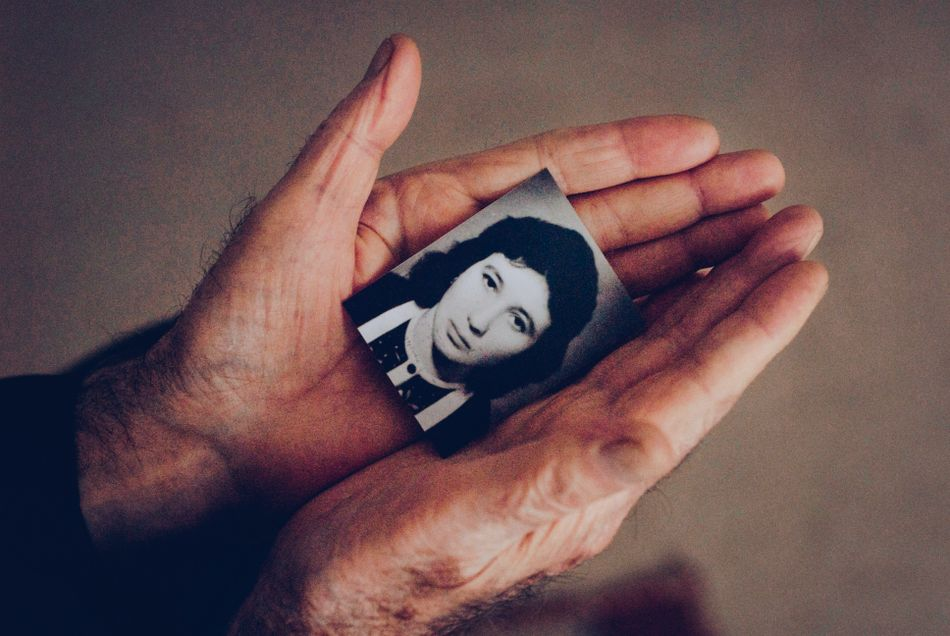

Afscheid & loslaten
De laatste trein
Voor dat moment waarop je nog zoveel wilt zeggen, maar de tijd verdergaat.
Luisterfragment · 0:45Luister voordat je bestelt
De beste manier om Idea2Music te begrijpen is om op play te drukken. Van een feestelijk moment tot afscheid en gemis: de sfeer verandert, het verhaal blijft persoonlijk.
Drie echte luisterfragmenten van 45 seconden · muziek en zang gemaakt met AI · foto's ter illustratie.
Afscheid & loslaten
Voor dat moment waarop je nog zoveel wilt zeggen, maar de tijd verdergaat.
Luisterfragment · 0:45
Verjaardag & vieren
Voor iemand die één dag helemaal in het middelpunt mag staan. Warm, vrolijk en persoonlijk.
Luisterfragment · 0:45
Herinnering & gemis
Voor wie je mist, een stem die je bijblijft en herinneringen die je wilt bewaren.
Luisterfragment · 0:45Jij kiest het onderwerp, de sfeer en de mensen om wie het gaat.